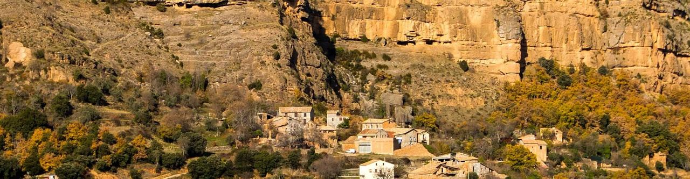

Ruta · Tremp
El tímid Gurp s'amaga sota les cingleres; altrament, la desinhibida Santa Engràcia s'exposa sobre del penyal i rep l'embat dels vents del nord. Els calorosos capvespres d'estiu, mentre el sol…